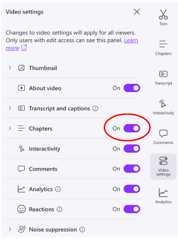
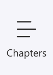
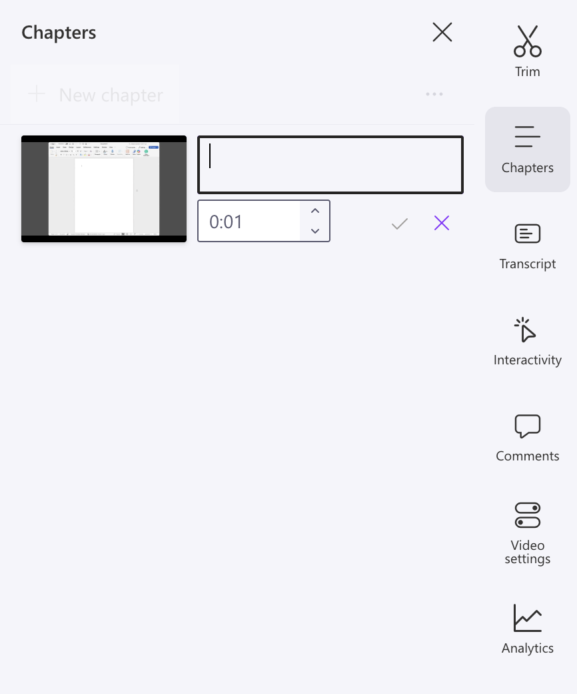
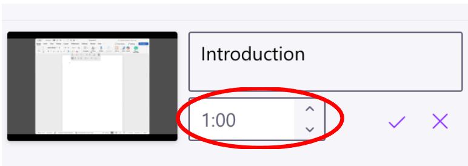
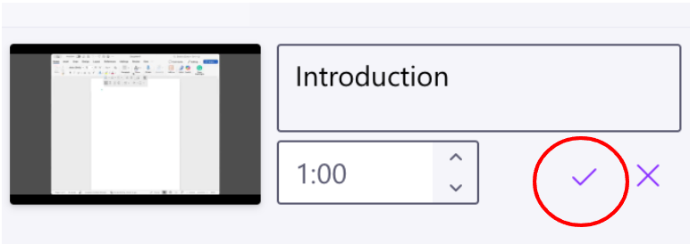

Chapter cards are a great way to organize the content of your video and make it easier for viewers to navigate. This page will walk you through how to add chapter cards (otherwise known as title or information cards) to your videos using ClipChamp’s built-in tools.
In the Clipchamp player page, navigate to the toolbar on the right side of the screen.
Click on Video Settings. A window appears with options for settings.
Turn on Chapters by clicking the switch to its right so that it is highlighted in purple. This prompts ClipChamp to automatically generate chapters for your video based on your transcript.
Note: A transcript must be generated in order to generate chapter cards. A step-by-step walk through of this process is available in the

Navigate to the Chapters button on the right menu, which appears after turning the chapter setting on in Step 3. A window opens where you can edit each chapter card.

Click New Chapter from the chapters window. A dialog box opens along with a small preview of the video and a drop-down menu where you can adjust timestamps.

Place your cursor in the timestamp selector.

Type the time of the video at which you would like the chapter section to end. The video preview automatically jumps to this time, so you can easily see where the chapter is ending
Tip: You can use the arrows next to the box to increase or decrease the time by 0.01 seconds if adjustments are needed.
Place your cursor in the text dialogue box located directly above the timestamp selector.
Type what you want the name of your chapter to be.
Example: “Introduction”
Click the check mark symbol in the bottom right corner next to the timestamp selector to create your chapter.

Repeat steps 1-6 as many times as needed based on the number of chapters you would like your video to have.